Your positions, watched.
Trading rules you build on your phone, answered on your glasses. We alert you on every event linked to your Bybit positions and put the exact trade on the lens.


Every rule you trade by, one switch away.
Get an alert when volume spikes or funding is high. For actions like adding a stop or closing half a position, your glasses show the trade for you to confirm. Tap any tile on your phone to edit it.
Every event on your positions, on one lens.
Every open position. Right on the lens.
Main lists every open position with its price, move and liquidation distance. Tap one to open it: size, liquidation, stop, PnL and how many shortcuts are watching.
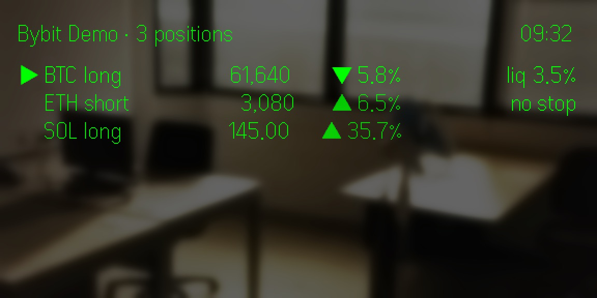
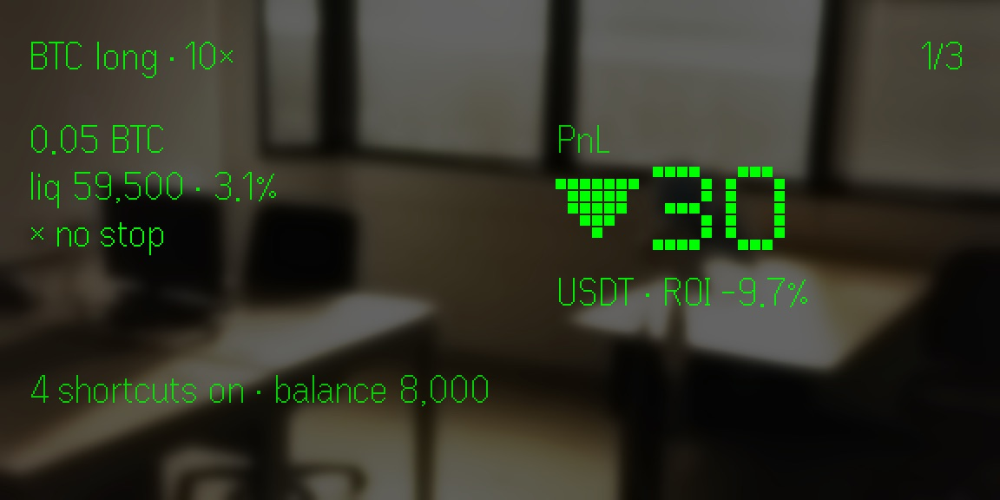
Your liquidation gets close. You see it first.
Leveraged positions close to liquidation, while there is still time to add margin or close half.
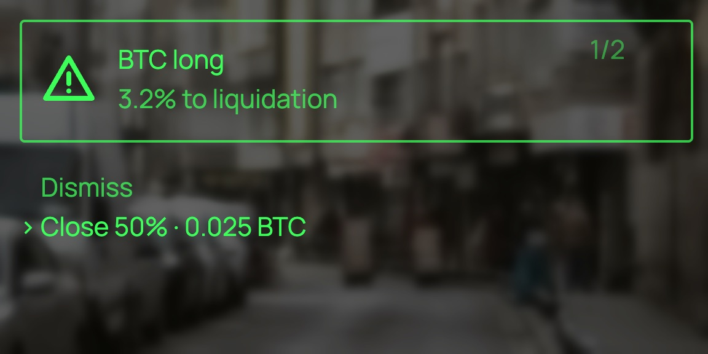
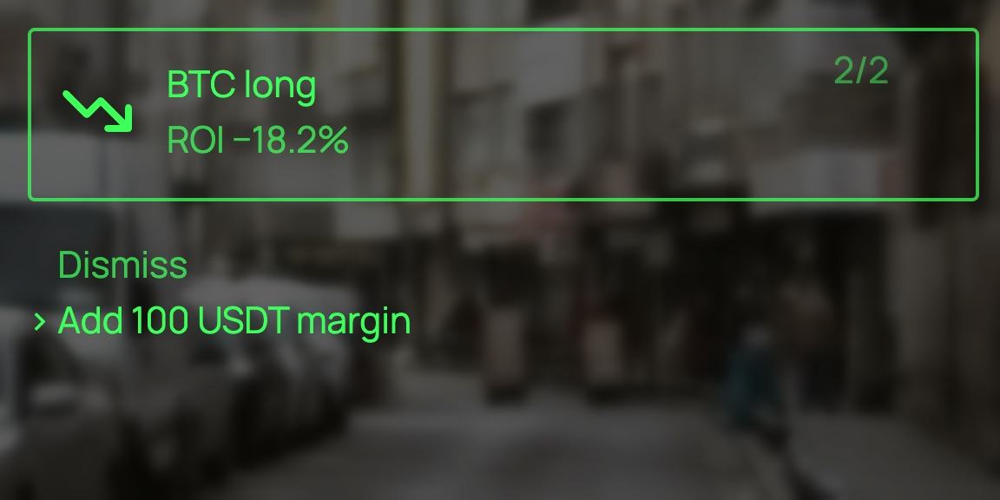
Your price nears the stop. You know before it hits.
Close to the stop, no stop at all, closed by stop, take profit or liquidation: every step of your exit plan.
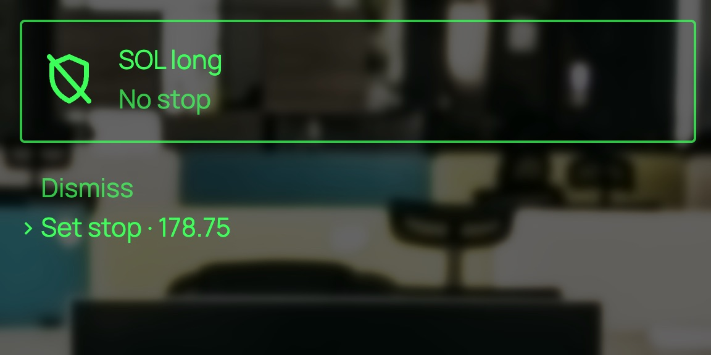
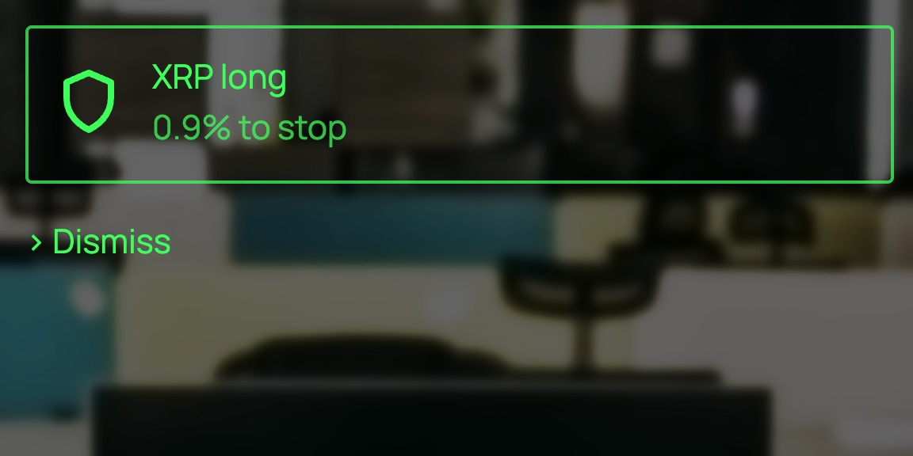
Your order fills. Your glasses say so.
Limit orders, take-profit and stop-loss on Bybit perps, partial fills and orders open too long included.
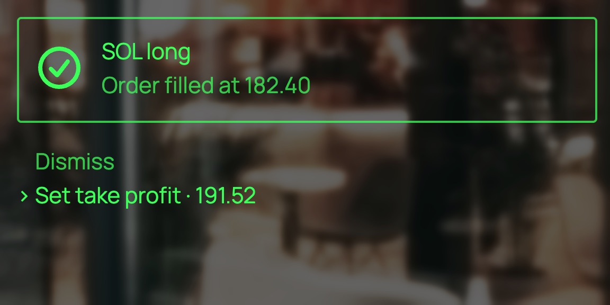
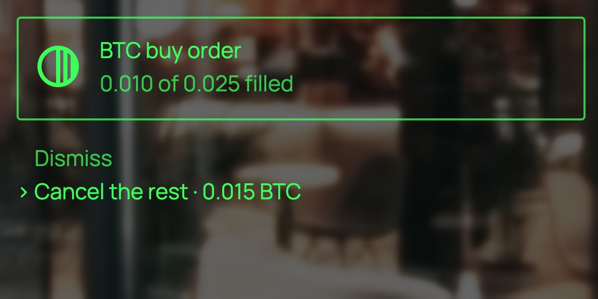
Holding it got expensive. Now you know.
Price crossing your level, a fast move in minutes, a volume spike, funding running hot: what your position costs and where it is heading.

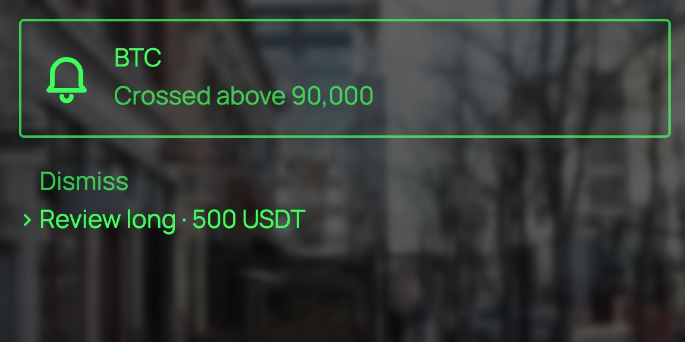
Your trade works. You lock it in at once.
ROI above your line, price close to take profit: move the stop to entry or take half off the table before the move gives it back.
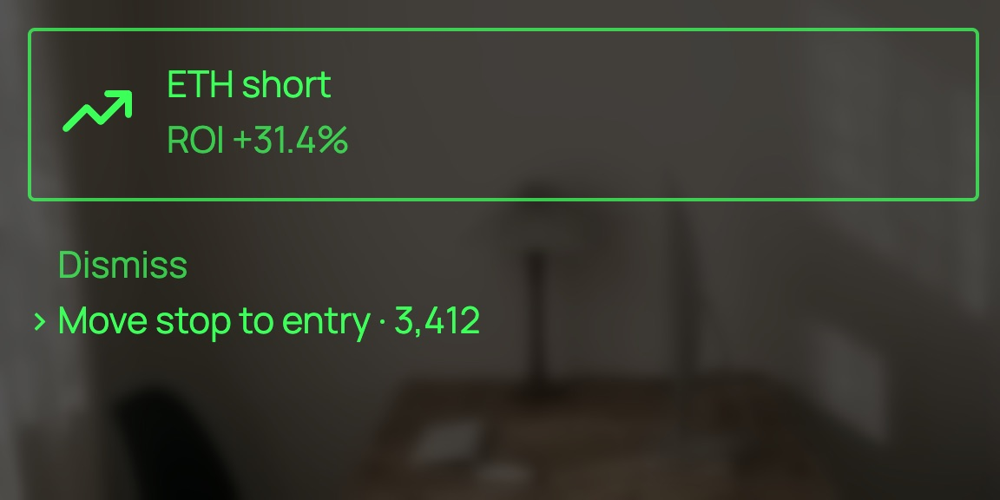
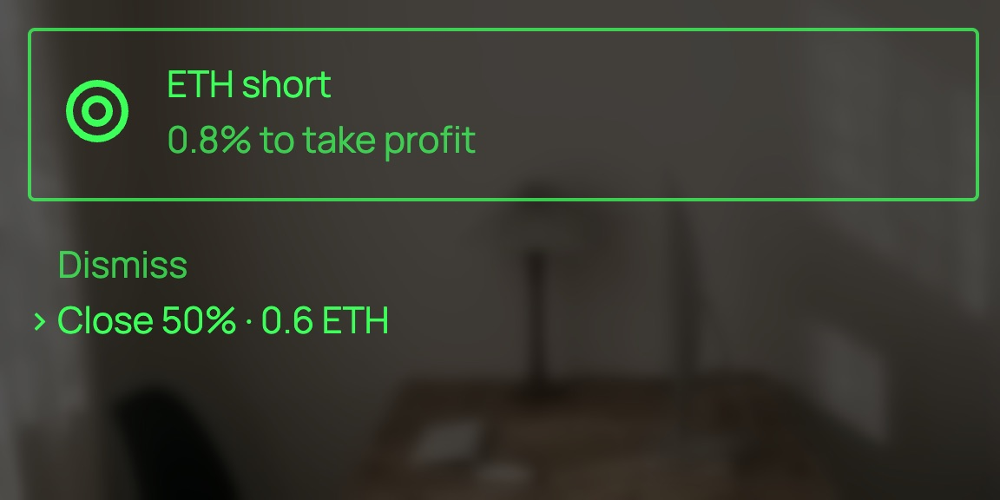
A phrase is enough. We line it up.
Tap the lens and say “protect all” or “lock profits”. Every shortcut with that phrase raises its proposals at once; each still needs its own tap.

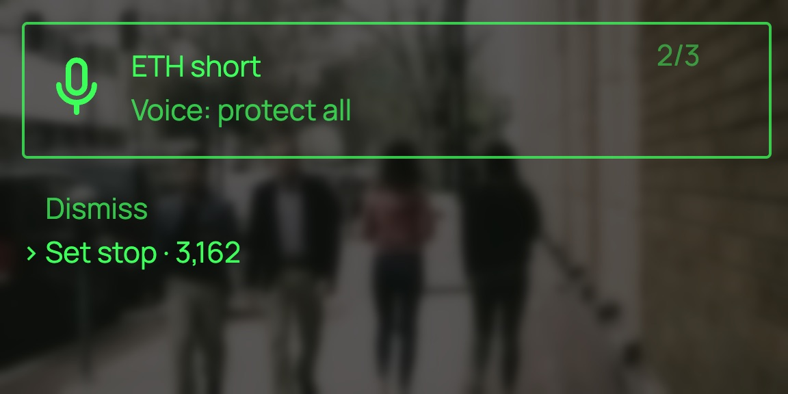
An open adds risk. Read it before it lands.
Open and Increase never go straight to Bybit: a Review shows size, margin, leverage and stop first. The result comes back from the exchange, not from us.
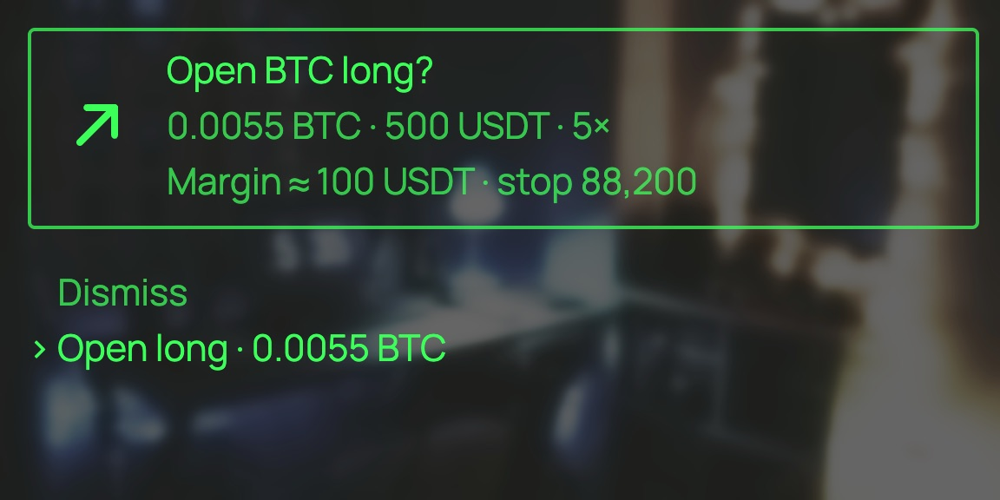
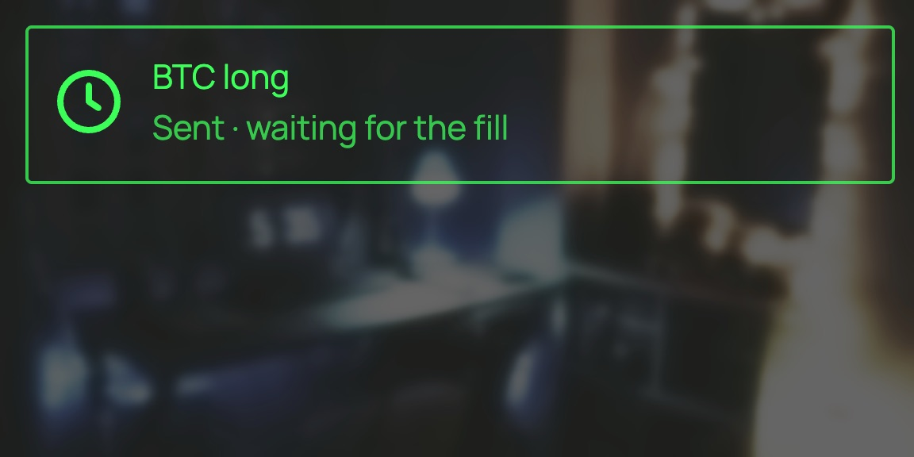
Build a shortcut.
Enable JavaScript to try the interactive editor.
Start with a template
One feed. Three places to read it.

Questions, answered.
How does Trade Shortcuts handle my keys and my money?
Your Bybit keys stay on your own Trade Shortcuts server, never on the phone or the glasses. Every trade is a proposal you confirm on the lens; a second tap or a resend returns the same execution. No withdrawals, no transfers.
How do the alerts work?
Build a shortcut on the phone: apply to one scope, when one or more conditions, do one action. The server checks Bybit every 2 seconds. When a shortcut fires, the lens shows the position, the strongest reason and one exact command, with Dismiss first.
Can a shortcut trade without me?
No. Nothing reaches the exchange until you tap the action on your glasses. Terms never change silently: if the size or price moved, a new proposal replaces the old one and the old tap does nothing.
Which exchanges does Trade Shortcuts support?
Bybit demo and testnet. The server refuses any other host at startup. A built-in demo exchange runs without any keys.
What types of alerts can I receive?
Liquidation distance, profit and loss, stop and take-profit distance, a missing stop, closed by stop, take profit or liquidation, price levels and price changes, volume spikes, funding, and orders filled, partly filled or open too long.
What do I need?
Even Realities G2 glasses, the Even app on your phone, and a Trade Shortcuts server you run yourself. Voice needs an OpenAI key on that server.
How do I receive alerts?
On the G2 lens and in the open phone app, according to your notification settings. A linked Telegram chat can receive alerts when the glasses are off or no other channel takes the alert.
Switch on your first shortcut. It takes a minute.
Pick a template, flip the switch. Nothing trades without your tap.